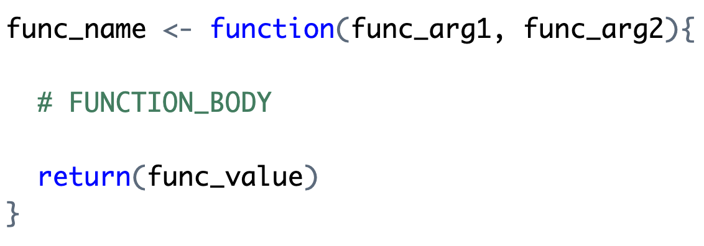
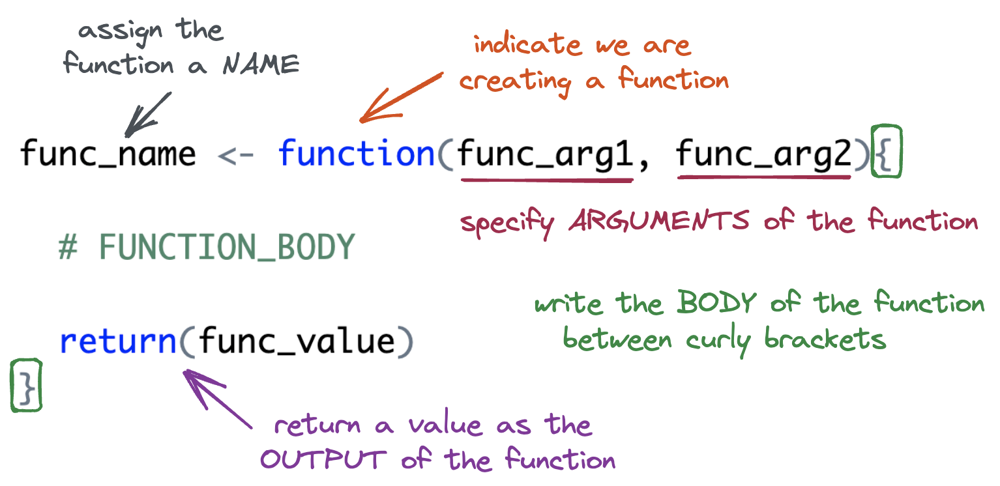
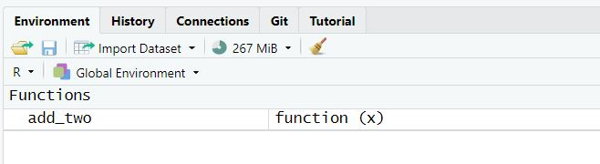

Writing Vector Functions
Monday, May 11
Today we will…
- Lecture
- Function Basics
- Variable Scope + Environment
- PA 7: Writing Functions
Follow along
Remember to download, save, and open up the handout for today!
Why write functions?
Functions allow you to automate common tasks!
- We’ve been using functions since Day 1, but when we write our own, we can customize them!
- Have you found yourself copy-pasting code and only changing small parts?
Writing functions has 3 big advantages over copy-paste:
- Your code is easier to read.
- To change your analysis, simply change one function.
- You avoid mistakes from copy-paste.
Function Basics
Function Syntax

Function Syntax

A (very) Simple Function
Let’s define the function.
- You must run the code to define the function just once.
Naming: add_two <-
The name of the function is chosen by the author.
Arguments
The argument(s) of the function are chosen by the author.
- Arguments are how we pass external values into the function.
- They are temporary variables that only exist inside the function body.
Body: { }
The body of the function is where the action happens.
- The body must be specified within a set of curly brackets.
- The code in the body will be executed (in order) whenever the function is called.
Output: Last Value
Your function will give back what would normally print out from the last line in the body…
- an implicit return
Output: return()
…you can also explicitly use the command return().
Style decision
The tidyverse style guide currently suggests using implicit returns since it is more concise and more “idiomatic” to R…
But using return() explicity is clearer to readers and new learners.
I leave this up to you!
Output: early returns
Explicit returns are necessary for early returns
Output: more than one output
If you need to return more than one object from a function, wrap those objects in a list.
Function Arguments
What if we wanted to write a more general function, named add_something(). The function would take two inputs:
xthe vector to add tosomethingthe value to add tox
How would your function change?
Arguments Cont.
- If we supply a default value when defining the function, the argument is optional when calling the function.
- If a value is not supplied,
somethingdefaults to 2.
Input Validation
When a function requires an input of a specific data type, check that the supplied argument is valid.
Variable Scope + Environment
Variable Scope
The location (environment) in which we can find and access a variable is called its scope.
- We need to think about the scope of variables when we write functions.
- What variables can we access inside a function?
- What variables can we access outside a function?
Global Environment
- The top right pane of Rstudio shows you the global environment.
- This is the current state of all objects you have created.
- These objects can be accessed anywhere.

Function Environment
- The code inside a function executes in the function environment.
- Function arguments and any variables created inside the function only exist inside the function.
- They disappear when the function code is complete.
- What happens in the function environment does not affect things in the global environment.
- Function arguments and any variables created inside the function only exist inside the function.
Function Environment
We cannot access variables created inside a function outside of the function.
Name Masking
Name masking occurs when an object in the function environment has the same name as an object in the global environment.
Dynamic Lookup
Functions look for objects FIRST in the function environment and SECOND in the global environment.
- If the object doesn’t exist in either, the code will give an error.
It is not good practice to rely on global environment objects inside a function!
Debugging

(Allison Horst)
Debugging
You will make mistakes (create bugs) when coding.
- Unfortunately, it becomes more and more complicated to debug your code as your code gets more sophisticated.
- This is especially true with functions!
Debugging Strategies
- Interactive coding
- Highlight lines within your function and run them one-by-one to see what happens.
print()debugging- Add
print()statements throughout your code to make sure the values are what you expect.
- Add
- Rubber Ducking
- Verbally explain your code line by line to a rubber duck (or a human).
General Function Writing Advice
When you have a concept that you want to turn into a function…
Write a simple example of the code without the function framework.
Generalize the example by assigning variables.
Write the code into a function.
Call the function on the desired arguments
This structure allows you to address issues as you go.
Let’s Practice
Base R Refresher
- We can extract components of a vector using
[ ] - The inputs can be:
- logical values (
TRUE,FALSE) - indices (e.g.,
1,2,3)
- logical values (
above_average()
Goal: Keep only the elements of
xgreater than the mean.
Option 1: Using Logical Values
Step 1: Find locations where values of x are larger than the mean
Option 2: Using Indices
Step 2: Use this output to extract the desired values from x
every_third()
Goal: Return every third element from a vector.
Write down the steps you would need to create a function named every_third() that takes in a vector and returns every third element from that vector (i.e., indices 1, 4, 7, 10, etc.).
Think about:
- What inputs the function should take.
- How to identify which positions in the vector are “every third.”
- How to select those elements from the vector.
Generate Indices
Represent the indices (positions) of each element of
x.
Identify Every Third Position
Identify which positions are “every third.”
| index | Remainder (index %% 3) |
Keep? |
|---|---|---|
| 1 | 1 | ✅ |
| 2 | 2 | ❌ |
| 3 | 0 | ❌ |
| 4 | 1 | ✅ |
| 5 | 2 | ❌ |
| 6 | 0 | ❌ |
| 7 | 1 | ✅ |
Identify Every Third Position
Identify which positions are “every third.”
Subset x
Grab the elements of
xwe want to keep.
Make it into a function!
PA 7: Writing Functions
You will write several small functions, then use them to unscramble a message. Many of the functions have been started for you, but none of them are complete as is.

Collaborative Protocol
During your collaboration, your group will alternate between three roles:
- Reads out the prompt and ensures the group understands what is being asked.
- Manages resources (e.g., cheatsheets, textbook).
- Answers Coder’s questions about syntax based on the resources.
- Works with the group to debug the code.
- Encourages the Coder to vocalize and explain their thinking.
- Types the code specified by the Coder into the Quarto document.
- Runs the code provided by the Coder.
- Works with group to debug the code.
- Evaluates the output against the question prompt.
- Confirms they understand what the prompt is asking.
- Talks with the group about their ideas.
- Explains their thinking.
- Directs the Computer what to type.
- Works with the group to debug the code.
Submission
- When you have completed the puzzle, you will end with 6 numbers that relate to a TV show. You will each individually submit the name of that TV show.
- You can ask me if it is correct before you submit
- You do not need to submit your code, but you should check your code against the solutions when they are posted! . . .
Starting Roles Today
The person who has the most siblings starts as the coder, second as the project manager.
To do…
- PA 7: Writing Functions
- Due Tuesday by 11:59pm
- Project Checkpoint 2: Project Proposal and Group Contract
- Due Friday, 5/15 at 11:59pm.
- Lab 7: Searching for Efficiency
- Due Sunday 5/17 at 11:59pm.